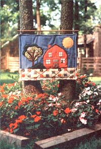

The ""wood stove, padded room"" wall covering the author made for a friend ... a bold, stuffed owl for a child's room ... another simple, striking design ... and a really nifty ""landscape"" wall hanging displayed-approriately-against a landscape.